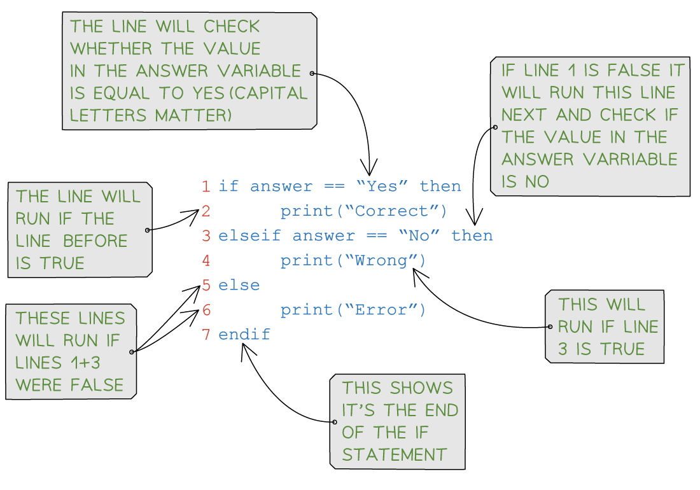
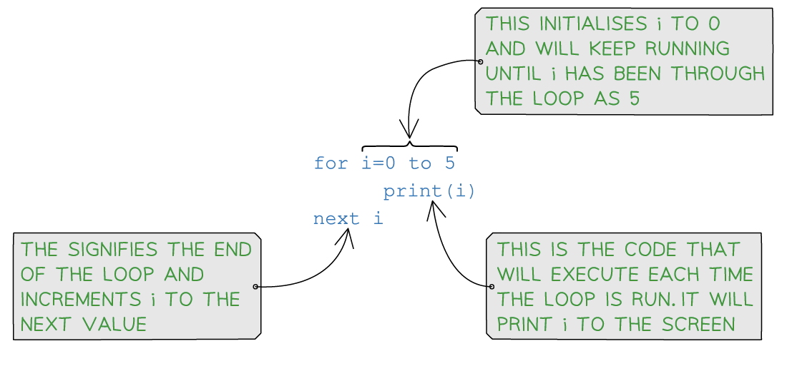
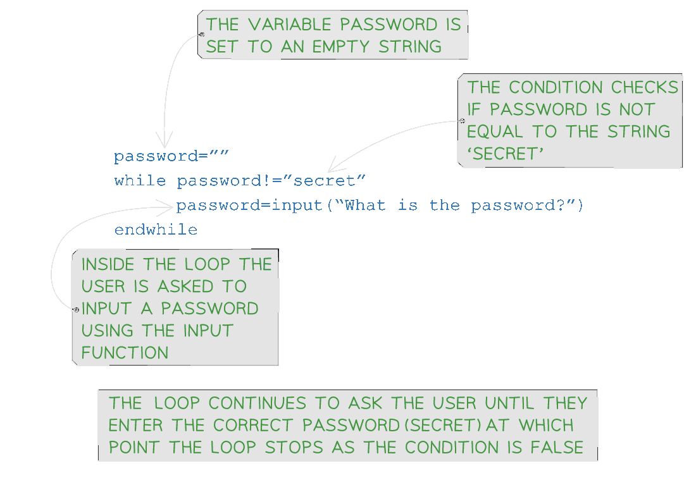

Variables & Constants
What is a variable?
- A variable is an identifier that can change in the lifetime of a program
- Identifiers should be:
- In mixed case (Pascal case)
- Only contain letters (A-Z, a-z)
- Only contain digits (0-9)
- Start with a capital letter and not a digit
- In mixed case (Pascal case)
- A variable can be associated a datatype when it is declared
- When a variable is declared, memory is allocated based on the data type indicated
| seudocode |
|---|
| DECLARE : |
DECLARE Age : INTEGER |
DECLARE Price : REAL |
DECLARE GameOver : BOOLEAN |
| Python |
|---|
score = int() # whole number |
cost = float() # decimal number |
light = bool() # data can only have one or two values |
What is a constant?
- A constant is an identifier set once in the lifetime of a program
- Constants are generally named in all uppercase characters
- Constants aid the readability and maintainability
- If a constant needs to be changed, it should only need to be altered in one place in the whole program
| Pseudocode |
|---|
| CONSTANT ← |
CONSTANT PI ← 3.142 |
CONSTANT PASSWORD ← "letmein" |
CONSTANT HIGHSCORE ← 9999 |
| Python |
|---|
PI = 3.142 |
VAT = 0.20 |
PASSWORD = "letmein" |
Data Types
What is a data type?
- A data type is a classification of data into groups according to the kind of data they represent
- Computers use different data types to represent different types of data in a program
- The basic data types include:
| Data type | Used for | Pseudocode | Example |
|---|---|---|---|
| Integer | Whole numbers | INTEGER |
10, -5, 0 |
| Real | Numbers with a fractional part (decimal) | REAL |
3.14, -2.5, 0.0 |
| Character | Single character | CHAR |
'a', 'B', '6', '£' |
| String | Sequence of characters | STRING |
"Hello world", "ABC", "@#!%" |
| Boolean | True or false values | BOOLEAN |
True, False |
- It is important to choose the correct data type for a given situation to ensure accuracy and efficiency in the program
- Data types can be changed within a program, this is called casting
Programming data types
| Data type | Pseudocode | Python |
|---|---|---|
| Integer | Number ← 5 |
number = 5 |
| Real | RealNumber ← 3.14 |
realNumber = 3.14 |
| Character | FirstNameInitial ← 'a' |
firstNameInitial = 'a' |
| String | Password ← "letmein" |
password = "letmein" |
| Boolean | LightSensor ← True |
lightSensor = True |
Input & Output
What is an input?
- An input isa value that is read from an input device and then processed by a computer program
- Typical input devices include:
- Keyboards - Typing text
- Mice - Selecting item, clicking buttons
- Sensors - Reading data from sensors such as temperature, pressure or motion
- Microphone - Capturing audio, speech recognition
- Without inputs, programs are not useful as they can’t i nteract with the outside world and always produce the same result
- In programming the keyboard is considered the standard for user input
- If the command ’ INPUT ’ is executed, a program will wait for the user to type a sequence of characters
- In other programming languages different command words can be used
Examples
| Pseudocode (INPUT ) | Python |
|---|---|
INPUT NameIF Name ← "James" OR Name ← "Rob" THEN... |
name=input("Enter your name: ")if name <mark> "James" or name </mark> "Rob": |
What is an output?
- An output is a value sent to an output device from a computer program
- Typical output devices include:
- Monitor - Displaying text, images or graphics
- Speaker - Playing audio
- Printer - Creating physical copies of documents or images
- In programming the monitor is considered the standard for user output
- If the command ’ OUTPUT ’ is executed, a program will output to the screen
- In other programming languages different command words can be used
Examples
| Pseudocode (OUTPUT ) | Python |
|---|---|
INPUT NameIF Name ← "James" OR Name ← "Rob" THENOUTPUT "Great names!" |
name=input("Enter your name: ")if name <mark> "James" or name </mark> "Rob":print("Great names!") |
INPUT NameIF Name ← "James" OR Name ← "Rob" THENOUTPUT "Love the name ", Name |
name=input("Enter your name: ")if name <mark> "James" or name </mark> "Rob":print("Love the name "+name) |
Sequence
What is sequence?
- Sequence refers to lines of code which are run one line at a time
- The lines of code are run in the order that they written from the first line of code to the last line of code
- Sequence is crucial to the flow of a program, any instructions out of sequence can lead to unexpected behaviour or errors
Example 1
- A simple program to ask a user to input two numbers, number two is subtracted from number one and the result is outputted
| Line | Pseudocode |
|---|---|
| 01 | OUTPUT "Enter the first number" |
| 02 | INPUT Num1 |
| 03 | OUTPUT "Enter the second number" |
| 04 | INPUT Num2 |
| 05 | Result ← Num1 - Num2 |
| 06 | OUTPUT Result |
- A simple swap of line 01 and line 02 would lead to an unexpected behaviour, the user would be prompted to input information without knowing what they should enter
Example 2
- This function calculates the area of a rectangle
- Inputs:
- length: The length of the rectangle
- width: The width of the rectangle
- length: The length of the rectangle
- Returns:
- The area of the rectangle
// Pseudocode
FUNCTION CalculateArea(length, width)
RETURN area
area ← length * width
END FUNCTION
// Main program
length ← 5
width ← 3
correct_area ← CalculateArea(length, width)
OUTPUT "Correct area (length * width): ", correct_area</code></pre></td></tr><tr><th colspan="1" rowspan="1"><p><b>Python example</b></p></th></tr><tr><td colspan="1" rowspan="1"><pre><code>def calculate_area(length, width):
return area
area = length * width
# ------------------------------------------------------------------------
# Main program
# ------------------------------------------------------------------------
length = 5
width = 3
correct_area = calculate_area(length, width)
print(f"Correct area (length * width): {correct_area}")
- In the example, the sequence of instructions is wrong and would cause a runtime error
- In the
calculate_area()function a value is returned before it is assigned - The correct sequence is:
area ← length * width
RETURN area
OR
area = length * width
return area
Selection
What is Selection?
- Selection is when the flow of a program is changed, depending on a set of conditions
- The outcome of this condition will then determine which lines or block of code is run next
- Selection is used for validation, calculation and making sense of a user’s choices
- There are two ways to write selection statements:
- if… then… else…
- case…
- if… then… else…
If Statements
What is an If statement?
- As If statements allow you to execute a set of instructions if a condition is true
- They have the following syntax:
IF <condition>
THEN
<statement>
ENDIF
- A detailed look at a Python IF statement:

Example
| Concept | Pseudocode | Python |
|---|---|---|
| IF-THEN-ELSE | IF Answer ← “Yes” |
if answer “Yes”: |
Nested Selection
What is nested selection?
- Nested selection is a selection statement within a selection statement, e.g. an If inside of another If
- Nested means to be ’ stored inside the other ’
Example
// Pseudocode
IF Player2Score > Player1Score
THEN
IF Player2Score > HighScore
THEN
OUTPUT Player2, " is champion and highest scorer"
ELSE
OUTPUT Player2, " is the new champion"
ENDIF
ELSE
OUTPUT Player1, " is still the champion"
IF Player1Score > HighScore
THEN
OUTPUT Player1, " is also the highest scorer"
ENDIF
ENDIF
# Python
# Prompt the user to enter a number
print("Enter a number: ")
test_score = int(input())
# Outer statement to check if the test_score is above 40
if test_score > 40:
# Inner statement to assign the result from the test
if test_score > 70:
result = "Distinction"
elif test_score > 55:
result = "Merit"
else:
result = "Pass"
else:
result = "Fail"
# Output the result
print(result)
Case Statements
What is a case statement?
- A case statement can mean less code but it only useful when comparing multiple values of the same variable
- If statements are more flexible and are generally used more in languages such as Python
- The format of a CASE statement is:
CASE OF <identifier> <value 1>: <statement> <value 2>: <statement> .... OTHERWISE <statement> ENDCASE
| Concept | Pseudocode | Python |
|---|---|---|
| CASE | INPUT Move CASE OF Move ‘W’ : Position ← Position - 10 ‘E’ : Position ← Position + 10 ‘A’ : Position ← Position - 1 ‘D’ : Position ← Position + 1 OTHERWISE OUTPUT “Beep” ENDCASE |
day = “Sat” match day: case “Sat”: print(“Saturday”) case “Sun”: print(“Sunday”) case _: print(“Weekday”) |
- Make sure to include all necessary components in the selection statement:
- the condition,
- the statement(s) to execute when the condition is true
- any optional statements to execute when the condition is false
- Use proper indentation to make the code easier to read and understand
- Be careful with the syntax of the programming language being used, as it may differ slightly between languages
- Make sure to test the selection statement with various input values to ensure that it works as expected
Write an algorithm using pseudocode that:
- Inputs 3 numbers
- Outputs the largest of the three numbers [3]
Exemplar answer
// Pseudocode
INPUT A
INPUT B
INPUT C
IF A >= B AND A >= C THEN
OUTPUT A
ELSE IF B >= A AND B >= C THEN
OUTPUT B
ELSE
OUTPUT C
ENDIF
if A > B and A > C:
print(A)
elif B > C:
print(B)
else:
print(C)
Iteration
What is iteration?
- Iteration is repeating a line or a block of code using a loop
- Iteration can be:
- Count controlled
- Condition controlled
- Nested
Count Controlled Loops
What is a count controlled loop?
- A count controlled loop is when the code is repeated a fixed number of times (e.g. using a for loop)
- A count controlled loop can be written as:
FOR <identifier> ← <value1> TO <value2> <statements> NEXT <identifier> - Identifiers must be an integer data type
- It uses a counter variable that is incremented or decremented after each iteration
- This can be written as:
FOR <identifier> ← <value1> TO <value2> STEP <increment>
<statements>
NEXT <identifier>
- A detailed look at a Python FOR statement:

Examples
| Iteration | Pseudocode | Python |
|---|---|---|
| Count controlled | FOR X ← 1 TO 10 OUTPUT “Hello” NEXT X |
for x in range(10): print(“Hello”) |
| This will print the word “Hello” 10 times | ||
| FOR X ← 2 TO 10 STEP 2 OUTPUT X NEXT X |
for x in range(2,12,2): print(x) # Python range function excludes end value |
|
| This will print the even numbers from 2 to 10 inclusive | ||
| FOR X ← 10 TO 0 STEP -1 OUTPUT X NEXT X |
for x in range(10,-1,-1): print(x) # Python range function excludes end value |
|
| This will print the numbers from 10 to 0 inclusive |
Condition Controlled Loops
What is a condition controlled loop?
- A condition controlled loop is when the code is repeated until a condition is met
- There are two types of condition controlled loops:
- Post-condition (REPEAT)
- Pre-condition (WHILE)
Post-condition loops (REPEAT)
-
A post-condition loop is executed at least once
-
The condition must be an expression that evaluates to a Boolean (True/False)
-
The condition is tested after the statements are executed and only stops once the condition is evaluated to True
-
It can be written as:
REPEAT <statement> UNTIL <condition>
| Iteration | Pseudocode | Python |
|---|---|---|
| Post-condition | REPEAT INPUT Colour UNTIL Colour = “red” |
# NOT USED IN PYTHON |
| REPEAT INPUT Guess UNTIL Guess = 42 |
# NOT USED IN PYTHON |
Pre-condition loops (WHILE)
- The condition must be an expression that evaluates to a Boolean (True/False)
- The condition is tested and statements are only executed if the condition evaluates to True
- After statements have been executed the condition is tested again
- The loop ends when the condition evaluates to False
- It can be written as:
WHILE <condition> DO
<statements>
ENDWHILE
- A detailed look at a Python WHILE statement:

Iteration
WHILE Colour != "Red" DO
INPUT Colour
ENDWHILE
while colour != "Red":
colour = input("New colour")
INPUT Temperature
WHILE Temperature > 37 DO
OUTPUT "Patient has a fever"
INPUT temperature
ENDWHILE
temperature = float(input("Enter temperature: "))
while temperature > 37:
print("Patient has a fever")
temperature = float(input("Enter temperature: "))
Nested Iteration
What is nested iteration?
- Nested iteration is a loop within a loop, e.g. a FOR inside of another FOR
- Nested means to be ’ stored inside the other ’
Example
// Pseudocode
Total ← 0
FOR Row ← 1 TO MaxRow
RowTotal ← 0
FOR Column ← 1 TO 10
RowTotal ← RowTotal + Amount[Row, Column]
NEXT Column
OUTPUT "Total for Row ", Row, " is ", RowTotal
Total ← Total + RowTotal
NEXT Row
OUTPUT "The grand total is ", Total
# Program to print a multiplication table up to a given number
# Prompt the user to enter a number
number = int(input("Enter a number: "))
# Set the initial value of the counter for the outer loop
outer_counter = 1
# Outer loop to iterate through the multiplication table
while outer_counter <= number:
# Set the initial value of the counter for the inner loop
inner_counter = 1
# Inner loop to print the multiplication table for the current number
while inner_counter <= 10:
# Calculate the product of the outer and inner counters
product = outer_counter * inner_counter
# Print the multiplication table entry
print(outer_counter, "x", inner_counter, "=", product)
# Increment the inner counter
inner_counter = inner_counter + 1
# Move to the next number in the multiplication table
outer_counter = outer_counter + 1
Totalling & Counting
How do you use totalling in a program?
- Totalling involves adding up values, often in a loop
- A total variable is set to 0 at the beginning of the program and then updated within a loop, such as:
| Pseudocode | Python |
|---|---|
| Total ← 0 FOR I ← 1 to 10 INPUT Num TOTAL ← TOTAL + Num NEXT I OUTPUT Total |
total = 0 for i in range(1, 11): num = int(input("Enter a number: ")) total = total + num print(“Total:”, total) |
How do you use counting in a program?
- Counting involves keeping track of the number of times a particular event occurs
- A count variable is set to 0 and then updated within a loop, such as:
Pseudocode
Count ← 0
FOR I ← 1 to 10
INPUT Num
IF Num > 5
THEN
Count ← Count + 1
ENDIF
NEXT I
OUTPUT Count
Python
count = 0
for i in range(1, 11):
num = int(input("Enter a number: "))
if num > 5:
count = count + 1
print("Count:", count)
Write an algorithm using pseudocode that:
- Inputs 20 numbers
- Outputs how many of these numbers are greater than 50
[3]
Answer
Count ← 0
FOR x ← 1 TO 20 [1]
INPUT Number
IF Number > 50
THEN
Count ← Count + 1 [1]
ENDIF
NEXT x
OUTPUT Count [1]
String Handling
What is string manipulation?
- String manipulation is the use of programming techniques to modify, analyse or extract information from a string
- Examples of string manipulation include:
- Case conversion (modify)
- Length (analyse)
- Substrings (extract)
Case conversion
- The ability to change a string from one case to another, for example, lower case to upper case
| Function | Pseudocode | Python | Output |
|---|---|---|---|
| Uppercase | Name ← “Sarah” OUTPUT UCASE(Name) |
Name = “Sarah” print(Name.upper()) |
"SARAH" |
| Lowercase | Name ← “SARAH” OUTPUT LCASE(Name) |
Name = “SARAH” print(Name.lower()) |
"sarah" |
Length
- The ability to count the number of characters in a string, for example, checking a password meets the minimum requirement of 8 characters
| Pseudocode | Python | Output |
|---|---|---|
| Password ← “letmein” OUTPUT LENGTH(Password) |
Password = “letmein” print(len(Password)) |
7 |
| Password ← “letmein” IF LENGTH(Password) >= 8 THEN OUTPUT “Password accepted” ELSE OUTPUT “Password too short” ENDIF |
Password = “letmein” if len(Password) >= 8: print(“Password accepted”) else: print(“Password too short”) |
"Password too short" |
Substring
- The ability to extract a sequence of characters from a larger string in order to be used by another function in the program, for example, data validation or combining it with other strings
- Extracting substrings is done by specifying a start position and length in pseudocode, or a start and end index in Python.
- Substring has a start position of 1 in pseudocode and 0 in Python
| Pseudocode | Python | Output |
|---|---|---|
| Word ← “Revision” OUTPUT SUBSTRING(Word, 1, 3) |
Word = “Revision” print(Word[0:2]) |
"Rev" |
| Word ← “Revision” OUTPUT SUBSTRING(Word, 3, 6) |
Word = “Revision” print(Word[2:5]) |
"vision" |
The function Length(x) finds the length of a string x. The function substring(x,y,z) finds a substring of x starting at position y and z characters long. The first character in x is in position 1.
Write pseudocode statements to:
- Store the string “Save my exams” in x
- Find the length of the string and output it
- Extract the word exams from the string and output it
[6]
Answer
X ← "Save my exams"
# [1] for storing string in X
OUTPUT LENGTH(X)
# [1] for calling the function length. [1] for using the correct parameter X
Y ← 9
Z ← 5
OUTPUT SUBSTRING(X,Y,Z)
# [1] for using the substring function.
# [1] for correct parameters
# [1] for outputting length and substring return values
Arithmetic, Logical & Boolean Operators
What is an operator?
- An operator is a symbol used to instruct a computer to perform a specific operation on one or more values
- Examples of common operators include:
- Arithmetic
- Logical
- Boolean
Arithmetic Operators
| Operator | Pseudocode | Python |
|---|---|---|
| Addition | + |
+ |
| Subtraction | - |
- |
| Multiplication | * |
* |
| Division | / |
/ |
| Modulus (remainder after division) | MOD |
% |
| Quotient (whole number division) | DIV |
// |
| Exponentiation (to the power of) | ^ |
** |
- To demonstrate the use of common arithmetic operators, three sample programs written in Python are given below
- Comments have been included to help understand how the arithmetic operators are being used
- Arithmetic operators #1 - a simple program to calculate if a user entered number is odd or even
- Arithmetic operators #2 - a simple program to calculate the area of a circle from a user inputted radius
- Arithmetic operators #3 - a simple program that generates 5 maths questions based on user inputs and gives a score of how many were correctly answered at the end
# -----------------------------------------------------------------------
# Arithmetic operators #1
# -----------------------------------------------------------------------
# Get the user to input a number
user_input = int(input("Enter a number: "))
# If the remainder of the number divided by 2 is 0, the number is even
if user_input % 2 == 0:
print("The number is even.")
else:
print("The number is odd.")
# -----------------------------------------------------------------------
# Arithmetic operators #2
# -----------------------------------------------------------------------
# Get the radius from the user
radius = float(input("Enter the radius of the circle: "))
# Calculate the area of the circle
area = 3.14159 * radius ** 2
# Display the calculated area
print("The area of the circle with radius", radius, "is", area)
# ------------------------------------------------------------------------
# Arithmetic operators #3
# ------------------------------------------------------------------------
# Set the score to 0
score = 0
# Loop 5 times
for x in range(5):
num1 = int(input("Enter the first number: "))
operator = input("Enter the operator (+, -, *): ")
num2 = int(input("Enter the second number: "))
user_answer = int(input("What is " + str(num1) + " " + str(operator) + " " + str(num2) + "? "))
# Check the answer and update the score
if operator == '+':
correct_answer = num1 + num2
elif operator == '-':
correct_answer = num1 - num2
elif operator == '*':
correct_answer = num1 * num2
else:
print("Invalid operator!")
continue
if user_answer == correct_answer:
score = score + 1
else:
print("Sorry, that's incorrect.")
# Display the final score
print("Your score is:", score)
Logical Operators
| Operator | Pseudocode | Python |
|---|---|---|
| Equal to | <mark> |
</mark> |
| Not equal to | <> |
!= |
| Less than | < |
< |
| Less than or equal to | <= |
<= |
| Greater than | > |
> |
| Greater than or equal to | >= |
>= |
Boolean Operators
- A Boolean operators is a logical operator that can be used to compare two or more values and return a Boolean value (True or False) based on the comparison
- There are 3 main Boolean values:
- AND: Returns True if both conditions are True
- OR: Returns True if one or both conditions are True
- NOT: Returns the opposite of the condition (True if False, False if True)
- To demonstrate the use of common Boolean operators, three sample programs written in Python are given below
- Comments have been included to help understand how the Boolean operators are being used
- Common Boolean operators #1 - a simple program that assigns Boolean values to two variables and outputs basic comparisons
- Common Boolean operators #2 - a simple program to output a grade based on a users score
- Common Boolean operators #3 - a simple program reads a text files and searches for an inputted score
# -----------------------------------------------------------
# Common Boolean operators #1
# -----------------------------------------------------------
# Assign a Boolean value to a and b
a = True
b = False
# Print the result of a and b
print("a and b:", a and b)
# Print the result of a or b
print("a or b:", a or b)
# Print the result of not a
print("not a:", not a)
# -----------------------------------------------------------
# Common Boolean operators #2
# -----------------------------------------------------------
# Take input for the score from the user
score = int(input("Enter the score: "))
# Compare the score and output the corresponding grade
if score >= 90 and score <= 100:
print("Grade: A")
elif score >= 80 and score < 90:
print("Grade: B")
elif score >= 70 and score < 80:
print("Grade: C")
elif score < 70:
print("Fail")
# -----------------------------------------------------------
# Common Boolean operators #3
# -----------------------------------------------------------
# Open the file for reading
try:
file = open("scores.txt", "r")
# Set flags to false
end_of_file = False
found = False
score = input("Enter a score: ")
# While it's not the end of the file and the score has not been found
while not end_of_file and not found:
# Read the line
scores = file.readline().strip()
# If the line equals the score
if score == str(scores):
found = True
print("Score found")
# If the line is empty (i.e., end of file)
if scores == "":
end_of_file = True
if not found:
print("Score not found")
# Close the file after reading
file.close()
except FileNotFoundError:
print("The file 'scores.txt' was not found.")
- Boolean operators are often used in conditional statements such as if, while, and for loops
- Boolean operators can be combined with comparison operators
- Be careful when using the NOT operator, as it can sometimes lead to unexpected results
- It is always a good idea to test your code with different inputs to ensure that it works as expected
Procedures & Functions
What are functions and procedures?
IGCSE 0478 Paper 2 assesses your ability to define, use, and explain functions*,* procedures*, and* parameters using both pseudocode and Python*. This page shows only examinable structures, phrasing, and examples—no fluff.*
- Functions and proceduresare a type of sub program, a sequence of instructions that perform a specific task or set of tasks
- Procedures and functions are defined at the start of the code
- Sub programs are often used to simplify a program by breaking it into smaller, more manageable parts
- Sub programs can be used to:
- Avoid duplicating code and can be reused throughout a program
- Improve the readability and maintainability of code
- Perform calculations, to retrieve data, or to make decisions based on input
- Avoid duplicating code and can be reused throughout a program
- Parameters are values that are passed into a sub program
- Parameters can be variables or values and they are located in brackets after the name of the sub program
- Example:
FUNCTION TaxCalculator(pay,taxcode)ORPROCEDURE TaxCalculator(pay,taxcode)
- Example:
- Parameters can be variables or values and they are located in brackets after the name of the sub program
- Sub programs can have multiple parameters
- To use a sub program you ’ call ’ it from the main program
What’s the difference between a function and procedure?
- A Function returns a value whereas a procedure does not
Procedures
- Procedures are defined using the PROCEDURE keyword in pseudocode or def keyword in Python
- A procedure can be written as:
PROCEDURE <identifier>
<statements>
ENDPROCEDURE
- Or if parameters are being used:
PROCEDURE <identifier>(<param1>:<data type>, <param2>:<data type>...)
<statements>
ENDPROCEDURE
// Creating a procedure
// Pseudocode
PROCEDURE calculate_area(length: INTEGER, width: INTEGER)
area ← length * width
OUTPUT "The area is ",area
END PROCEDURE</code></pre></td></tr><tr><td colspan="1" rowspan="1"><p><b>Python</b></p></td></tr><tr><td colspan="1" rowspan="1"><pre><code>def ageCheck(age):
if age > 18:
print("You are old enough")
else:
print("You are too young")
- To call a procedure, it can be written as:
CALL <identifier>
CALL <identifier>(Value1,Value2...)
// Calling a procedure
// Pseudocode
// CALL Calculate_area
CALL Calculate_area(5,3)
// Python
// ageCheck(21)
print(ageCheck(21))
Examples
- A Python program using procedures to display a menu and navigate between them
- Procedures are defined at the start of the program and the main program calls the first procedure to start
- In this example, no parameters are needed
# Procedures
# Procedure definition for the main menu
def main_menu():
# Outputs the options
print("1. Addition")
print("2. Subtraction")
print("3. Multiplication")
print("4. Division")
print("5. Exit")
# Asks the user to enter their choice
choice = int(input("Enter your choice: "))
if choice == 1:
addition()
elif choice == 2:
subtraction()
elif choice == 3:
multiplication()
elif choice == 4:
division()
elif choice == 5:
exit_program()
# Procedure definition for addition
def addition():
num1 = int(input("Enter the first number: "))
num2 = int(input("Enter the second number: "))
print("Result:", num1 + num2)
# Procedure definition for subtraction
def subtraction():
num1 = int(input("Enter the first number: "))
num2 = int(input("Enter the second number: "))
print("Result:", num1 - num2)
# Procedure definition for multiplication
def multiplication():
num1 = int(input("Enter the first number: "))
num2 = int(input("Enter the second number: "))
print("Result:", num1 * num2)
# Procedure definition for division
def division():
num1 = int(input("Enter the first number: "))
num2 = int(input("Enter the second number: "))
if num2 != 0:
print("Result:", num1 / num2)
else:
print("Error: Division by zero is not allowed.")
# Procedure to exit the program
def exit_program():
print("Exiting the program. Goodbye!")
exit()
# Main program
while True: # Loop to continuously show the menu until the user chooses to exit
main_menu()
Functions
- Functions are defined using the FUNCTION keyword in pseudocode or def keyword in Python
- Functions always return a value so they do not use the CALL function, instead they are called within an expression
- A function can be written as:
FUNCTION <identifier> RETURNS <data type>
<statements>
ENDFUNCTION
- Or if parameters are being used:
FUNCTION <identifier>(<param1>:<data type>, <param2>:<data type>...) RETURNS <data type>
<statements>
ENDFUNCTION
In pseudocode, never write CALL calculate_area() for a function.
Functions are called in expressions like:
OUTPUT calculate_area(5,3)
Use CALL only with procedures that do not return a value.
// Creating and using a function
// Pseudocode
FUNCTION calculate_area(length: INTEGER, width: INTEGER)
area ← length * width
RETURN area
ENDFUNCTION
# Output the value returned from the function
OUTPUT(calculate_area(5,3))
//Python
def squared(number):
squared = number^2
return squared
# Output the value returned from the function
print(squared(4))
Examples
- A Python program using a function to calculate area and return the result
- Two options for main program are shown, one which outputs the result (# 1) and one which stores the result so that it can be used at a later time (# 2)
# Functions
# Function definition, length and width are parameters
def area(length, width):
area = length * width # Calculate area
return area # Return area
# Main program #1
length = int(input("Enter the length: "))
width = int(input("Enter the width: "))
print(area(length, width)) # Calls the area function and prints the result
# Main program #2
length = int(input("Enter the length: ")) # Input for length
width = int(input("Enter the width: ")) # Input for width
calculated_area = area(length, width) # Stores the result of the function in a variable
print("The area is " + str(calculated_area) + " cm^2") # Outputs the result with a message</code></pre></td></tr></tbody></table>
An economy-class airline ticket costs £199. A first-class airline ticket costs £595.
(A) Create a function, flightCost(), that takes the number of passengers and the type of ticket as parameters, calculates and returns the price to pay.
You do not have to validate these parameters
You must use:
- a high-level programming language that you have studied [4]
(B) Write program code, that uses flightCost(), to output the price of 3 passengers flying economy.
You must use:
- a high-level programming language that you have studied [3]
How do I answer this question?
(A)
- Define the function, what parameters are needed? where do they go?
- How do you calculate the price?
- Return the result
(B)
- How do you call a function?
- What parameters does the function need to return the result?
Answers
| Part | Python |
|---|---|
| A | def flightCost(passengers, type): if type == “economy”: cost = 199 * passengers elif type == “first”: cost = 595 * passengers return cost |
| B | print(flightCost("economy", 3)OR x = flightCost("economy", 3)print(x) |
in pseudocode, you can get marks just for using the correct structure:
- Starts with
FUNCTIONorPROCEDURE[1 mark] - Correct use of parameters and
RETURN(functions) orOUTPUT(procedures) [1 mark] - Called correctly from main program [1 mark]
Local & Global Variables
Local Variables
What is a local variable?
- A local variable is a variable declared within a specific scope, such as a function or a code block
- Local variables are accessible only within the block in which they are defined, and their lifetime is limited to that particular block
- Once the execution of the block ends, the local variable is destroyed, and its memory is released
Python example
- In this python code, you can see that the
localVariable(with the value 10) is declared inside of the functionprintValue - This means that only this function can access and change the value in the local variable
- It cannot be accessed by other modules in the program
# Local variables
>def printValue():
localVariable = 10 # Defines a local variable inside the function
print("The value of the local variable is:", localVariable)
printValue() # Call the function
Global Variables
What is a global variable?
- A global variable is a variable declared at the outermost level of a program.
- They are declared outside any modules such as functions or procedures
- Global variables have a global scope, which means they can be accessed and modified from any part of the program
Python example
- In this python code, you can see that the
globalVariable(with the value 10) is declared outside of the functionprintValue - This means that this function and any other modules can access and change the value in the global variable
# Global variables
globalVariable = 10 # Defines a global variable
def printValue():
global globalVariable
print("The value into the variable is:", globalVariable)
printValue() # Call the function
Library Routines
What are library routines?
- A library routine is reusable code that can be used throughout a program
- The code has been made public through reusable modules or functions
- Using library routines saves programmers time by using working code that has already been tested
- Some examples of pre-existing libraries are:
- Random
- Round
Random
- The random library is a library of code which allows users to make use of ’ random ’ in their programs
- Examples of random that are most common are:
- Random choices
- Random numbers
- Random number generation is a programming concept that involves a computer generating a random number to be used within a program to add an element of unpredictability
- Examples of where this concept could be used include:
- Simulating the roll of a dice
- Selecting a random question (from a numbered list)
- National lottery
- Cryptography
| Concept | Pseudocode | Python |
|---|---|---|
| Random numbers | RANDOM(1,6) |
import randomnumber = random.randint(1,10)number = random.randint(-1.0,10.0) |
| Random choice | import randomchoice = random.choice() |
Examples
- Random number
//Pseudocode
// (In pseudocode we just use the RANDOM() function, so no import is needed)
// Ask user to enter a username and password
OUTPUT "Enter a username: "
INPUT User
OUTPUT "Enter a password: "
INPUT Pw
// Check if the user and password are correct
IF User = "admin" AND Pw = "1234" THEN
// Generate a random 4-digit code
Code ← ROUND((RANDOM() * 9000) + 1000, 0)
// Print the code
OUTPUT "Your code is ", Code
ELSE
OUTPUT "Invalid username or password."
ENDIF
# importing random library
import random
# asking user to enter a username and password
user = input("Enter a username: ")
pw = input("Enter a password: ")
# checking if the user and password are correct
if user <mark> "admin" and pw </mark> "1234":
# generating a random 4-digit code
code = random.randint(1000, 9999)
# printing the code
print("Your code is", code)
else:
print("Invalid username or password.")
- National lottery
// Pseudocode
// Create a list of numbers for the national lottery
DECLARE LotteryNumbers : ARRAY[1:49] OF INTEGER
FOR Index ← 1 TO 49
LotteryNumbers[Index] ← Index
NEXT Index
// Create an empty list to store the chosen numbers
DECLARE ChosenNumbers : ARRAY[1:6] OF INTEGER
// Loop to pick 6 numbers from the list
FOR Count ← 1 TO 6
// Use RANDOM to pick a number from the remaining list
RandomIndex ← ROUND((RANDOM() * (50 - Count)), 0)
IF RandomIndex = 0 THEN
RandomIndex ← 1
ENDIF
Number ← LotteryNumbers[RandomIndex]
// Add the chosen number to the list of chosen numbers
ChosenNumbers[Count] ← Number
// Remove the chosen number from the list of available numbers
FOR i ← RandomIndex TO 48
LotteryNumbers[i] ← LotteryNumbers[i + 1]
NEXT i
NEXT Count
// Sort the chosen numbers in ascending order
FOR i ← 1 TO 5
FOR j ← i + 1 TO 6
IF ChosenNumbers[i] > ChosenNumbers[j] THEN
Temp ← ChosenNumbers[i]
ChosenNumbers[i] ← ChosenNumbers[j]
ChosenNumbers[j] ← Temp
ENDIF
NEXT j
NEXT i
// Output the chosen numbers
OUTPUT "The winning numbers are: "
FOR i ← 1 TO 6
OUTPUT ChosenNumbers[i]
NEXT i
import random
# Create a list of numbers for the national lottery
lottery_numbers = list(range(1, 50))
# Create an empty list to store the chosen numbers
chosen_numbers = []
# Loop to pick 6 numbers from the list
for _ in range(6):
# Use random.choice to pick a number from the list
number = random.choice(lottery_numbers)
# Add the chosen number to the list of chosen numbers
chosen_numbers.append(number)
# Remove the chosen number from the list of available numbers
lottery_numbers.remove(number)
# Sort the chosen numbers in ascending order
chosen_numbers.sort()
# Output the chosen numbers
print("The winning numbers are:", chosen_numbers)
Round
- The round library is a library of code which allows users to round numerical values to a set amount of decimal places
- An example of rounding is using REAL values and rounding to 2 decimal places
- The round library can be written as:
ROUND(<identifier>, <places>)
| Concept | Pseudocode | Python |
|---|---|---|
| Round | Cost ← 1.9556OUTPUT ROUND(Cost,2)# Outputs 1.96 |
number = 3.14159rounded_number = round(number, 2)print(rounded_number)# Outputs 3.14 |
Example
// Example using the ROUND function
DECLARE Price : REAL
DECLARE RoundedPrice : REAL
Price ← 12.6789
// Round the value of Price to 2 decimal places
RoundedPrice ← ROUND(Price, 2)
OUTPUT "The rounded price is ", RoundedPrice
So if the variable Price was 12.6789, the output would be:
The rounded price is 12.68
Maintaining Programs
How do you write programs that are easy to maintain?
- Easy to maintain programs are written using techniques that make code easy to read
- Programmers should be consistent with the use of techniques such as:
- Layout - spacing between sections
- Indentation - clearly defined sections of code
- Comments - explaining key parts of the code
- Meaningful variable names - describe what is being stored
- White space - adding suitable spaces to make it easy to read
- Sub-programs - Functions or procedures used where possible
- When consistency is applied, programs are easy to maintain
Example easy to-maintain program
# Calculates the area of a triangle given its base and height
# Inputs:
# base (float): The length of the triangle's base (positive value)
# height (float): The height of the triangle from the base (positive value)
# Returns:
# The calculated area of the triangle (float)
# Raises:
# ValueError: If either base or height is non-positive
def calculate_area_of_triangle(base, height):
if base <= 0 or height <= 0:
raise ValueError("Base and height must be positive values.")
area = 0.5 * base * height # Corrected multiplication syntax
return area
def main():
# -----------------------------------------------------------------------
# Prompts the user for triangle base and height, calculates and prints the area
# -----------------------------------------------------------------------
try:
base = float(input("Enter the base of the triangle: "))
height = float(input("Enter the height of the triangle: "))
# Call the area calculation function
area = calculate_area_of_triangle(base, height)
print(f"The area of the triangle is approximately {area:.2f} square units.")
except ValueError as error:
print(f"Error: {error}")
# ------------------------------------------------------------------------
# Main program
# ------------------------------------------------------------------------
main()
Arrays
1-Dimensional Arrays
What is an array?
- An array is an ordered, static set of elements in a fixed-size memory location
- An array can only store 1 data type
- A 1D array is a linear array
- In languages such as Python, indexes start at 0, known as zero-indexed
- In CIE pseudocode, index’s start at 1

| Concept | Pseudocode | Python |
|---|---|---|
| Create | DECLARE scores: ARRAY[1:5]OF INTEGER |
scores = [] |
| Creates a blank array with 5 elements (1-5) | Creates a blank array | |
scores ← [12, 10, 5, 2, 8] |
scores = [12, 10, 5, 2, 8] |
|
| Creates an array called scores with values assigned | ||
| Assignment | colours[4] ← "Red" |
colours[4] = "Red" |
| Assigns the colour “Red” to index 4 (4th element) | Assigns the colour “Red” to index 4 (5th element) |
Examples
Creating a one-dimensional array called ‘array’ which contains 5 integers.
- Create the array with the following syntax:
| Pseudocode | Python |
|---|---|
DECLARE MyArray : ARRAY[1:5] OF INTEGER |
array = [1, 2, 3, 4, 5] |
- Access the individual elements of the array by using the following syntax:
| Pseudocode | Python |
|---|---|
MyArray[1] ← 1 |
array[index] |
- Modify the individual elements by assigning new values to specific indexes using the following syntax:
| Pseudocode | Python |
|---|---|
MyArray[index] ← newValue |
array[index] = newValue |
- Use the
lenfunction to determine the length of the array by using the following syntax:
| Pseudocode | Python |
|---|---|
| There is no built-in length function in CIE pseudocode. The array length is known from the declaration or stored in a variable. | len(array) |
- In the example the array has been iterated through to output each element within the array
- A for loop has been used for this
// Pseudocode
// Creating a one-dimensional array
DECLARE MyArray : ARRAY[1:5] OF INTEGER
MyArray[1] ← 1
MyArray[2] ← 2
MyArray[3] ← 3
MyArray[4] ← 4
MyArray[5] ← 5
// Accessing elements of the array
OUTPUT MyArray[1] // Output: 1
OUTPUT MyArray[3] // Output: 3
// Modifying elements of the array
MyArray[2] ← 10
// MyArray is now: [1, 10, 3, 4, 5]
// Iterating over the array
DECLARE Index : INTEGER
FOR Index ← 1 TO 5
OUTPUT MyArray[Index]
NEXT Index
// Output:
// 1
// 10
// 3
// 4
// 5
// Length of the array
DECLARE Length : INTEGER
Length ← 5
OUTPUT Length // Output: 5
# Python
# Creating a one-dimensional array
array = [1, 2, 3, 4, 5]
# Accessing elements of the array
print(array[0]) # Output: 1
print(array[2]) # Output: 3
# Modifying elements of the array
array[1] = 10
print(array) # Output: [1, 10, 3, 4, 5]
# Iterating over the array
for element in array:
print(element)
# Output:
# 1
# 10
# 3
# 4
# 5
# Length of the array
length = len(array)
print(length) # Output: 5
2-Dimensional Arrays
What is a 2-dimensional array?
- A 2D array extends the concept on a 1D array by adding another dimension
- A 2D array can be visualised as a table with rows and columns
- When navigating through a 2D array you first have to go down the rows and then across the columns to find a position within the array

| Concept | Pseudocode | Python |
|---|---|---|
| Create | Declare a 2D array with name and number for 3 people | Creates a 3x2 blank array (3 people, each with name and number) |
DECLARE NamesAndNumbers : ARRAY[1:3, 1:2] OF STRING1:3 = 3 rows → one for each person1:2 = 2 columns → one for name, one for numberOF STRING → both names and phone numbers are stored as strings |
NamesANDNumbers = [[None, None], [None, None], [None, None]] |
|
Declare a 2D array called players with name and score assigned for 4 people (Alice, Bob, Charlie & Daisy) |
||
// Declare a 2D array with 4 rows and 2 columns (name and score) DECLARE players : ARRAY[1:4, 1:2] OF STRING // Assign values to each player players[1,1] ← "Alice" players[1,2] ← "25" players[2,1] ← "Bob" players[2,2] ← "30" players[3,1] ← "Charlie" players[3,2] ← "22" players[4,1] ← "Daisy" players[4,2] ← "28" |
# Each player has a name and a scoreplayers = [["Alice", 25],["Bob", 30],["Charlie", 22],["Daisy", 28]] |
|
| Assignment | Assigning the name Holly to replace the name Charlie |
|
players[3,1] ← "Holly" |
players[2][0] = "Holly" # Charlie is at index 2 (third row), name is at index 0 |
Examples
- Initialising a 2D array with 3 rows and 3 columns, with the specified values
// Pseudocode
DECLARE Array2D : ARRAY[1:3, 1:3] OF INTEGER
Array2D[1,1] ← 1
Array2D[1,2] ← 2
Array2D[1,3] ← 3
Array2D[2,1] ← 4
Array2D[2,2] ← 5
Array2D[2,3] ← 6
Array2D[3,1] ← 7
Array2D[3,2] ← 8
Array2D[3,3] ← 9
// Accessing elements in the 2D array
OUTPUT Array2D[1,1] // Output: 1
OUTPUT Array2D[2,3] // Output: 6
array_2d = [[1, 2, 3],
[4, 5, 6],
[7, 8, 9]]
# Accessing elements in the 2D array
print(array_2d[0][0]) # Output: 1
print(array_2d[1][2]) # Output: 6
Iterating through a 2-dimensions array
- When iterating through a 2D array, a nested
FOR...NEXTloop can be used - Nested iteration to access items in the 2D array
DECLARE Row : INTEGER
DECLARE Col : INTEGER
FOR Row ← 1 TO 3
FOR Col ← 1 TO 3
OUTPUT Array2D[Row, Col]
NEXT Col
NEXT Row
for row in array_2d:
for item in row:
print(item, end=" ")
print() # Print a newline after each row
In the exam, the question will always give an example to demonstrate which order the array is being read from.
Some questions can be X,Y and others can be Y, X. Always refer to the example before giving your answer!
A parent records the length of time being spent watching TV by 4 children
Data for one week (Monday to Friday) is stored in a 2D array with the identifier minsWatched.
The following table shows the array
| ** Quinn** | Lyla | Harry | Elias | ||
|---|---|---|---|---|---|
| 0 | 1 | 2 | 3 | ||
| Monday | 0 | 34 | 67 | 89 | 78 |
| Tuesday | 1 | 56 | 43 | 45 | 56 |
| Wednesday | 2 | 122 | 23 | 34 | 45 |
| Thursday | 3 | 13 | 109 | 23 | 90 |
| Friday | 4 | 47 | 100 | 167 | 23 |
Elias watched 78 minutes of TV on Monday:
- Identify the row for Monday: Row
0. - Identify the column for Elias: Column
3. - Find the value at
minsWatched[0][3]: The value is78
Write a line of code to output the number of minutes that Lyla watched TV on Tuesday [1]
Write a line of code to output the number of minutes that Harry watched TV on Friday [1]
Write a line of code to output the number of minutes that Quinn watched TV on Wednesday [1]
Answers
print(minsWatched[1][1]ORprint(minsWatched[1,1]print(minsWatched[4][2]ORprint(minsWatched[4,2]print(minsWatched[2][0]ORprint(minsWatched[2,0]
File Handling
What is file handling?
- File handling is the use of programming techniques to work with information stored in text files
- Examples of file handing techniques are:
- opening text files
- reading text files
- writing text files
- closing text files
| Concept | OCR exam reference | Python |
|---|---|---|
| Open | OPENFILE "fruit.txt" FOR READ |
file = open("fruit.txt","r") |
| Close | CLOSEFILE "fruit.txt" |
file.close() |
| Read line | READFILE "fruit.txt", LineOfText |
file.readline() |
| Write line | OPENFILE "fruit.txt" FOR WRITEWRITEFILE "fruit.txt", "Oranges" |
file.write("Oranges") |
| Append a file | OPENFILE "fruit.txt" FOR APPEND |
file = open("shopping.txt","a") |
Pseudocode example (reading data)
| Employees | Text file |
|---|---|
| OPENFILE “employees.txt” FOR READ endOfFile ← FALSE // Set end of file flag to false WHILE NOT endOfFile DO READFILE “employees.txt”, name // Read line 1 (name) name ← TRIM(name) // Remove extra spaces/newlines READFILE “employees.txt”, department // Read line 2 (department) department ← TRIM(department) // Remove extra spaces/newlines READFILE “employees.txt”, salary // Read line 3 (salary) salary ← TRIM(salary) // Remove extra spaces/newlines READFILE “employees.txt”, age // Read line 4 (age) age ← TRIM(age) // Remove extra spaces/newlines IF name = “” THEN // If name is empty (end of file) endOfFile ← TRUE // Set end of file flag to true ELSE OUTPUT "Name: " & name // Print name OUTPUT "Department: " & department // Print department OUTPUT "Salary: " & salary // Print salary OUTPUT "Age: " & age // Print age OUTPUT “” // Add a blank line for readability ENDIF ENDWHILE CLOSEFILE “employees.txt” |
Greg Sales 39000 43 Lucy Human resources 26750 28 Jordan Payroll 45000 31 |
Python example (reading data)
| Employees | Text file |
|---|---|
| # Open file in read mode file = open(“employees.txt”, “r”) endOfFile = False # Set end of file flag to false while not endOfFile: # While not end of file name = file.readline().strip() # Read line 1 and remove extra spaces/newlines department = file.readline().strip() # Read line 2 salary = file.readline().strip() # Read line 3 age = file.readline().strip() # Read line 4 if name == “”: # If name is empty (end of file) endOfFile = True # Set end of file flag to true else: print("Name: ", name) # Print name print("Department: ", department) # Print department print("Salary: ", salary) # Print salary (fixed typo) print("Age: ", age) # Print age print() # Add a blank line for readability # Close the file file.close() |
Greg Sales 39000 43 Lucy Human resources 26750 28 Jordan Payroll 45000 31 |
Pseudocode example (writing new data)
| Employees | Text file |
|---|---|
| OPENFILE “employees.txt” FOR APPEND // Write employee details to the file WRITEFILE “employees.txt”, “Polly” // Name WRITEFILE “employees.txt”, NEWLINE WRITEFILE “employees.txt”, “Sales” // Department WRITEFILE “employees.txt”, NEWLINE WRITEFILE “employees.txt”, “26000” // Salary WRITEFILE “employees.txt”, NEWLINE WRITEFILE “employees.txt”, “32” // Age WRITEFILE “employees.txt”, NEWLINE CLOSEFILE “employees.txt” |
Greg Sales 39000 43 Lucy Human resources 26750 28 Jordan Payroll 45000 31 Polly Sales 26000 32 |
Python example (writing new data)
| Employees | Text file |
|---|---|
| # Open file in append mode file = open(“employees.txt”, “a”) # Write employee details to the file file.write(“Polly\n”) # Name file.write(“Sales\n”) # Department file.write(“26000\n”) # Salary file.write(“32\n”) # Age # Close the file file.close() |
Greg Sales 39000 43 Lucy Human resources 26750 28 Jordan Payroll 45000 31 Polly Sales 26000 32 |
When opening files it is really important to make sure you use the correct letter in the open command
- " r " is for reading from a file only
- " w " is for writing to a new file, if the file does not exist it will be created. If a file with the same name exists the contents will be overwritten
- " a " is for writing to the end of an existing file only
Always make a backup of text files you are working with, one mistake and you can lose the contents!
Use pseudocode to write an algorithm that does the following:
- Inputs the title and year of a book from the user.
- Permanently stores the book title and year to the existing text file books.txt [4]
How to answer this question
- Write two input statements (title and year of book)
- Open the file
- Write inputs to file
- Close the file
Example answer
title = input("Enter title")
year = input("Enter year")
file = open("books.txt")
file.writeline(title)
file.writeline(year)
file.close()
Guidance
title = input("Enter title") |
1 mark |
|---|---|
year = input("Enter year") |
|
file = open("books.txt") |
1 mark |
file.writeline(title) |
1 mark |
file.writeline(year) |
|
file.close() |
1 mark |